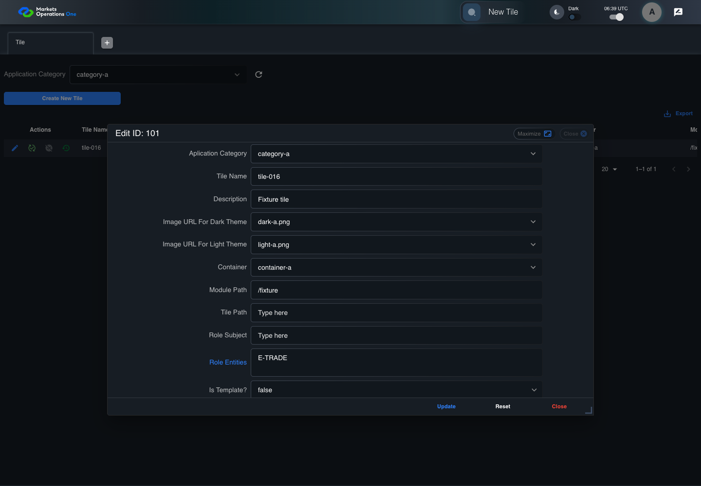

BFF-ADM-016 current BFF administration through actual UI
PASS · application/run-072/bff-adm-016-current-bff-administration-through-actual-ui-c20641ce2cfd-attempt-1 · ACTUAL_APPLICATION_LOCAL_SERVICES
Actual current React and exact-current BFF admin controllers/services/JPA with actual migration DDL in disposable PostgreSQL. Controlled OUD/EMS2 identities and local Spring bootstrap. Fixture SQL seeds/mutates isolated records; service errors are actual database errors. Undefined agreed messages remain unresolved acceptance.
2026-10-22T06:39:45.469Z to 2026-10-22T06:39:51.745Z
Assertions and result · Artifact manifest · Exact run inputs and source hashes
Result SHA-256:63c1e8cf480aba518578a9d4a622c993a55585f3f48150b911e57a475c7f44eeMachine observations
- actual-identity-projection.json
d84a2208087f0248dacbdf8078a23f3610b6200f83572989812cdd6f4f5309a9 - baseline-inputs.json
05586ed04b10e802b9f3a9026f87beafaeb0ecbc3292ef59b30df19780729150 - bff-boundary.json
6d8a3197f9e5d787be55b3c19698222ab22d698b3ef1e774680e0981ee099427 - committed-ui-submission-comparisons.json
4a37f25168adf18be59eb1eea1bd6aa9a578fdbed91f0214af2c59cc6a32b03f - empty-filter-rule-representation.json
fe324c5d487a86667695cb54c45b523398a0f1d4e8c2c4b460fcbe964ebe03f1 - fixture-step-10.json
e96b5ab32e2ce6e68b1d996411346edc635ddd518f48542499b73fc656cc357a - fixture-step-11.json
e41703a65224739223905dc9b789022b5a814184aa71a97bcea3bbaa72f86aa2 - fixture-step-6.json
2a78c1ac511b32fb5259f2a73278d4f9298f560e8f5695bb3f841a0ecf54eeac - fixture-step-7.json
66ac433d521c114d2fffdcae5a2b330d0193e53c95d4f828a03c423e0e2f3c91 - fixture-step-8.json
f3532a42c3488b6250659af42ea1a6086381969331fa9a2544b168572ece56cf - fixture-step-9.json
527df7365f2da574ce769466fc32f5595ad17ced3ef9dcb00151f858aef37631 - initial-persisted-records.json
d5570b621cd465422a5874fa098d92f97ffaa249ef412745ce77b6b4cddcaa6e - persisted-after-submit.json
c835599f78b151a03c5bc569866a5838254e97cbff88f449e98e0f355d7ec02f - reference-snapshot-3.json
c38d9b93ce4800cba12207ee3137d79c3dbd9f34436cf7fcca37196acd10d6d0 - reference-snapshot-4.json
778830b55f48e5700e3997f9fed553124db88bf5bc23858646bdac38c8cc7dca - ui-origin-bff-requests.json
f255505285413a58a8569dd52ca82f2db27eb620cd091d8fe863eac506f24ddd
Screenshot capture: CAPTURED. Named frames: 23.
Step screenshot evidence: COMPLETE. 22/22 canonical steps have execution screenshots.
Canonical step timeline
Given Admin A uses subject "admin-a" with role "FMO_ADMIN" in an isolated authenticated browser
Execution: PASSED.1. step-01 Visible state after step 1: Given Admin A uses subject "admin-a" with role "FMO_ADMIN" in an isolated authenticated browser
2026-10-22T06:39:47.441Z · 1440×1000
Step: /Users/lushevol/code/github/ratan-release-impact/workbench/tasks/ui-test-coverage-20261022/test-cases.md:15312
SHA-256:d3390c968cd0daf72552ca575ab02bb6088c00d11a5fbfdbe24bbf8eab748ff4And the controlled Tile fixture records the initial grid rows and persisted values
Execution: PASSED.2. step-02 Visible state after step 2: And the controlled Tile fixture records the initial grid rows and persisted values
2026-10-22T06:39:47.572Z · 1440×1000
Step: /Users/lushevol/code/github/ratan-release-impact/workbench/tasks/ui-test-coverage-20261022/test-cases.md:15313
SHA-256:c5c8078b482ffe96110899a640d3a3592946aad0b1863e33de9927db5d127595And Category 101 has label "category-a" and Import Map 201 has Module Name "container-a"
Execution: PASSED.3. step-03 Visible state after step 3: And Category 101 has label "category-a" and Import Map 201 has Module Name "container-a"
2026-10-22T06:39:47.619Z · 1440×1000
Step: /Users/lushevol/code/github/ratan-release-impact/workbench/tasks/ui-test-coverage-20261022/test-cases.md:15314
SHA-256:0db7c1cb285f35e788c682957492657afee25f35c4db5aeb4161f571349ff0c3And both references belong to "FMO_ADMIN" and the Tile page category filter value is Category 101
Execution: PASSED.4. step-04 Visible state after step 4: And both references belong to "FMO_ADMIN" and the Tile page category filter value is Category 101
2026-10-22T06:39:47.776Z · 1440×1000
Step: /Users/lushevol/code/github/ratan-release-impact/workbench/tasks/ui-test-coverage-20261022/test-cases.md:15315
SHA-256:25386d97e30516ade5f6b3077c3e2d41e23fdd599c750fac4a591f068cc8d13dAnd the Tile grid has record "101" owned by "FMO_ADMIN"
Execution: PASSED.5. step-05 Visible state after step 5: And the Tile grid has record "101" owned by "FMO_ADMIN"
2026-10-22T06:39:47.847Z · 1440×1000
Step: /Users/lushevol/code/github/ratan-release-impact/workbench/tasks/ui-test-coverage-20261022/test-cases.md:15316
SHA-256:456f989d7d168ff763a8dd33dd867bc0754653bb0c0a5cb6e1eb847e0f831a0bAnd the baseline fixture data defines "Tile Name" as "tile-016"
Execution: PASSED.6. step-06 Visible state after step 6: And the baseline fixture data defines "Tile Name" as "tile-016"
2026-10-22T06:39:47.931Z · 1440×1000
Step: /Users/lushevol/code/github/ratan-release-impact/workbench/tasks/ui-test-coverage-20261022/test-cases.md:15317
SHA-256:02eb8e424108fa8240966c2f82cc2520397f4b850dcf0e98a578dc0017fb11d2And the baseline fixture data defines "Module Path" as "/fixture"
Execution: PASSED.7. step-07 Visible state after step 7: And the baseline fixture data defines "Module Path" as "/fixture"
2026-10-22T06:39:47.991Z · 1440×1000
Step: /Users/lushevol/code/github/ratan-release-impact/workbench/tasks/ui-test-coverage-20261022/test-cases.md:15318
SHA-256:f7e25f027aa52633b080b91132355e22cc0cc8fd8e845e8a705cf089ff3a146bAnd the baseline fixture data defines "Tile Path" as "/case-016"
Execution: PASSED.8. step-08 Visible state after step 8: And the baseline fixture data defines "Tile Path" as "/case-016"
2026-10-22T06:39:48.053Z · 1440×1000
Step: /Users/lushevol/code/github/ratan-release-impact/workbench/tasks/ui-test-coverage-20261022/test-cases.md:15319
SHA-256:beafb014b672af589d63f115c9f7edaa4aa2fc25a9600214b35791f1d0f1627eAnd the baseline fixture data defines "Role Entities" as "E-TRADE"
Execution: PASSED.9. step-09 Visible state after step 9: And the baseline fixture data defines "Role Entities" as "E-TRADE"
2026-10-22T06:39:48.120Z · 1440×1000
Step: /Users/lushevol/code/github/ratan-release-impact/workbench/tasks/ui-test-coverage-20261022/test-cases.md:15320
SHA-256:d731de1e48a863ad6ed098812b20ad102f41eb169b300c11c1b776ea6729325aAnd the baseline fixture data defines "Filter Rule" as ""
Execution: PASSED.10. step-10 Visible state after step 10: And the baseline fixture data defines "Filter Rule" as ""
2026-10-22T06:39:48.169Z · 1440×1000
Step: /Users/lushevol/code/github/ratan-release-impact/workbench/tasks/ui-test-coverage-20261022/test-cases.md:15321
SHA-256:09bdf81915e90ec2d5c3b920e09776c6409e91c1d57c81309fa925764e94a6baAnd the baseline Tile references use "Aplication Category" "category-a" and "Container" "container-a"
Execution: PASSED.11. step-11 Visible state after step 11: And the baseline Tile references use "Aplication Category" "category-a" and "Container" "container-a"
2026-10-22T06:39:48.219Z · 1440×1000
Step: /Users/lushevol/code/github/ratan-release-impact/workbench/tasks/ui-test-coverage-20261022/test-cases.md:15322
SHA-256:3aad050f897dae8504f1e24e40cc1effa96d1bffd88fcef9d8f63704964e7befWhen Admin A clicks the button labeled "Edit" in the Tile grid row with "Record Id" "101"
Execution: PASSED.12. step-12 Visible state after step 12: When Admin A clicks the button labeled "Edit" in the Tile grid row with "Record Id" "101"
2026-10-22T06:39:48.526Z · 1440×1000
Step: /Users/lushevol/code/github/ratan-release-impact/workbench/tasks/ui-test-coverage-20261022/test-cases.md:15323
SHA-256:b22c1ed5701fb71ea1679e1fbd62b13f224dd9b9a56334812256cab37ad06ac7Then the dialog titled "edit ID: 101" is visible on the Tile administration page
Execution: PASSED.13. step-13 Visible state after step 13: Then the dialog titled "edit ID: 101" is visible on the Tile administration page
2026-10-22T06:39:48.590Z · 1440×1000
Step: /Users/lushevol/code/github/ratan-release-impact/workbench/tasks/ui-test-coverage-20261022/test-cases.md:15324
SHA-256:69604b15f82b9c3d1606e7525ddc7896c98e26d0e95815aba72c9e93197c1479When Admin A fills the textbox labeled "Tile Name" with "tile-016" in dialog "edit ID: 101"
Execution: PASSED.14. step-14 Visible state after step 14: When Admin A fills the textbox labeled "Tile Name" with "tile-016" in dialog "edit ID: 101"
2026-10-22T06:39:49.013Z · 1440×1000
Step: /Users/lushevol/code/github/ratan-release-impact/workbench/tasks/ui-test-coverage-20261022/test-cases.md:15325
SHA-256:347602b7393a5432497cee87c9ee331d2f450dcae448a0754d8415711d0118d2And Admin A fills the textbox labeled "Module Path" with "/fixture" in dialog "edit ID: 101"
Execution: PASSED.15. step-15 Visible state after step 15: And Admin A fills the textbox labeled "Module Path" with "/fixture" in dialog "edit ID: 101"
2026-10-22T06:39:49.441Z · 1440×1000
Step: /Users/lushevol/code/github/ratan-release-impact/workbench/tasks/ui-test-coverage-20261022/test-cases.md:15326
SHA-256:82abf3fdc8c8a24603c50c3d3c493eb8f245677dc04478c9503cc7a2782672d0And Admin A fills the textbox labeled "Tile Path" with "" in dialog "edit ID: 101"
Execution: PASSED.16. step-16 Visible state after step 16: And Admin A fills the textbox labeled "Tile Path" with "" in dialog "edit ID: 101"
2026-10-22T06:39:49.872Z · 1440×1000
Step: /Users/lushevol/code/github/ratan-release-impact/workbench/tasks/ui-test-coverage-20261022/test-cases.md:15327
SHA-256:a3ecf580c569c8ef7f07a55c40acf11653e46c267fbc163c7d61334cf74238a0And Admin A fills the textarea labeled "Role Entities" with "E-TRADE" in dialog "edit ID: 101"
Execution: PASSED.
17. step-17 Visible state after step 17: And Admin A fills the textarea labeled "Role Entities" with "E-TRADE" in dialog "edit ID: 101"
2026-10-22T06:39:50.285Z · 1440×1000
Step: /Users/lushevol/code/github/ratan-release-impact/workbench/tasks/ui-test-coverage-20261022/test-cases.md:15328
SHA-256:d3440ce2f1a0c723888ffc500d3562d6e812ee82e6261764e73cd72c6d7a1628And Admin A fills the textarea labeled "Filter Rule" with "" in dialog "edit ID: 101"
Execution: PASSED.18. step-18 Visible state after step 18: And Admin A fills the textarea labeled "Filter Rule" with "" in dialog "edit ID: 101"
2026-10-22T06:39:50.705Z · 1440×1000
Step: /Users/lushevol/code/github/ratan-release-impact/workbench/tasks/ui-test-coverage-20261022/test-cases.md:15329
SHA-256:4391b30e67198550c0b4a43c6c22fc8ffbbd46b6b17f1336efa840526bb54047And Admin A clicks the button labeled "Update" in dialog "edit ID: 101"
Execution: PASSED.19. step-19 Visible state after step 19: And Admin A clicks the button labeled "Update" in dialog "edit ID: 101"
2026-10-22T06:39:51.002Z · 1440×1000
Step: /Users/lushevol/code/github/ratan-release-impact/workbench/tasks/ui-test-coverage-20261022/test-cases.md:15330
SHA-256:7022be45137d2d1b9873cb27117e587266b6164bb025a77e019067e54bbf1e8fThen the dialog titled "edit ID: 101" remains visible on the Tile administration page
Execution: PASSED.20. step-20 Visible state after step 20: Then the dialog titled "edit ID: 101" remains visible on the Tile administration page
2026-10-22T06:39:51.054Z · 1440×1000
Step: /Users/lushevol/code/github/ratan-release-impact/workbench/tasks/ui-test-coverage-20261022/test-cases.md:15331
SHA-256:bfb0618408407ec2a895d5feeec4695ec03e0bb42c5c12a122d5a0a1c6a607efAnd the alert with severity "error" in the portal snackbar contains the exact text "Please provide the value for the Title or Module Path or Tile Path."
Execution: PASSED.21. step-21 Visible state after step 21: And the alert with severity "error" in the portal snackbar contains the exact text "Please provide the value for the Title or Module Path or Tile Path."
2026-10-22T06:39:51.122Z · 1440×1000
Step: /Users/lushevol/code/github/ratan-release-impact/workbench/tasks/ui-test-coverage-20261022/test-cases.md:15332
SHA-256:b07bc5bcdea78362c28b914d484d19babcb041f66dda56de2a5b7d0aabcb72f2And the Tile data grid with column "Record Id" row identifiers and loaded field values equal the initial grid snapshot on the Tile administration page
Execution: PASSED.22. step-22 Visible state after step 22: And the Tile data grid with column "Record Id" row identifiers and loaded field values equal the initial grid snapshot on the Tile administration page
2026-10-22T06:39:51.259Z · 1440×1000
Step: /Users/lushevol/code/github/ratan-release-impact/workbench/tasks/ui-test-coverage-20261022/test-cases.md:15333
SHA-256:73cd025086b1be40dd4ed35c2c6955c7b45afa7fa0f01aaedaa275b28f8feb7d
Additional named frames
Screenshots establish visible state only. Assertions and traces support functional claims.